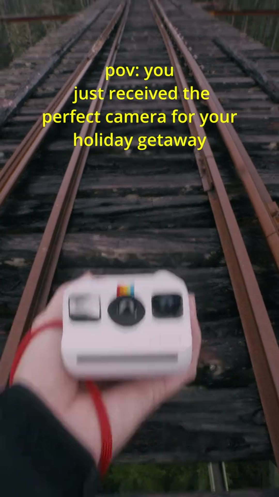
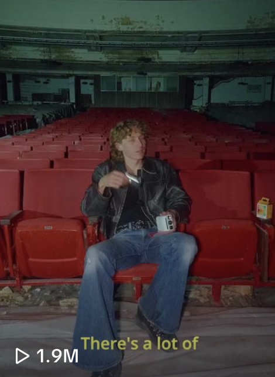

Shane Boyer made a Polaroid film travel 11.7M views.
The @shaneboyerr x Polaroid Go partnership didn't look like an ad — it looked like Shane. That's why one POV film passed 11.7 million views while campaigns with bigger budgets stalled.

11.7M viewsView counts are from Shane Boyer's own Polaroid-partner TikTok posts (on-screen, captured July 2026). Follower/like figures verified July 2026.
When Polaroid wanted a younger audience to feel the Go camera rather than read a spec sheet, they handed the brief to Shane Boyer (@shaneboyerr) — and his POV film for the little instant camera passed 11.7 million views on TikTok. It out-travelled placements with many times the budget, because it looked like his own work, not an advert.
That is the whole thesis of creator-led work. Boyer already had 2.5M+ people who show up for his cinematic New York and travel footage. Drop a Polaroid Go into that world — a trip to the Pacific Northwest, a day around the city — and the camera reads as part of the story, not a product bolted onto it. The recommendation feels like continuity.

Why the Polaroid film out-travelled bigger campaigns
Boyer's Polaroid work is patient and colour-graded, scored like a short film. His Pacific Northwest Go film and his day in New York with the Polaroid Go both carry the #PolaroidPartner tag and a discount code (Shane10), yet neither feels like a hard sell — they feel like a diary. A second cut, "finding meaning in the madness," leans further into the film-diary mood. The audience watches for the feeling, and the product comes along for the ride.
It didn't look like a Polaroid ad. It looked like Shane — so it travelled.
— The DGTL Influence view on Shane Boyer x PolaroidWhat a brand actually buys here
Not a shout — a fit. Polaroid bought Boyer's taste and the trust his audience already extends to it, and got a film that keeps working long after a paid flight ends. His abandoned-theatre Polaroid cut alone cleared 1.9M views. Reach is the headline; the taste is the reason it converts.

- POV that reads as authentic — the product feels recommended, not advertised.
- A signature look: patient, colour-graded, scored like a short film.
- 11.7M views on one brand film — organic reach a media buy can't guarantee.
- An audience that already trusts him, so the recommendation carries.
It's why a brand chasing a feeling — nostalgia, the shot you wish you'd kept — is often better served by one Shane Boyer than a stack of generic placements. Polaroid handed him the camera and let him do what he does. The 11.7 million is what happened next.
The Polaroid work
 11.7M
11.7M
1.9M Signature
SignatureA network people actually trust.
80+ vetted creators, matched to your brand — not bolted on. Let's scope an activation that moves real numbers.